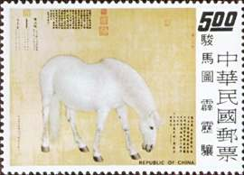
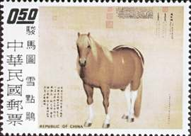
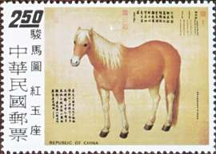
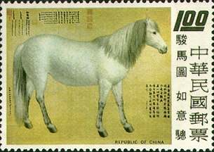
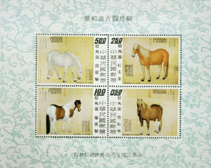
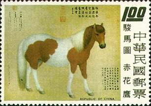
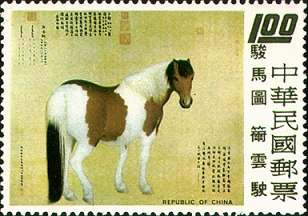
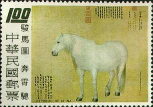

Eight Prized Horses Paintings Postage Stamps
(Issue of 1973)
Issue date: Started November 21, 1973. Perforation: Stamps 13 1/2, Souvenir sheets imperforates. Process: Deep etch offset. Photographer: Liu Pao-chin. Paper: Superior quality stamp paper. Printer Thomas de la Rue & Co., Ltd., London.
To introduce to the large public the Chinese paintings, a series of stamps reproducing the Eight Prized Horses Paintings of Giuseppe Castiglione, collected at the National Palace Museum, Taipei, Taiwan, Republic of China, was issued in two installments. The horses depicted on these paintings were gifts or tributes presented to Emperor Chien Lung (AD 1736-1796) of the Ching dynasty (AD 1644-1911) by chieftains or courtiers from the Chinese Turkestan. Emperor Chien Lung cherished those horses so much that he ordered his distinguished court painter, Lang Shih-ning (Giuseppe Castiglione, 1688 - 1766), to feature them in ink and color on silk, with the dimensions of each horse being carefully inscribed on the painting. Each of these paintings bears seals and poetic inscriptions by both the Emperor and the painter.
The souvenir sheet is printed with the 0.50, 1.00, 2.50 and 5.00 denominations on a blue gray background. The four stamps have borders of mock printed perforation. In addition, the four 1.00 stamps in different designs are printed on one whole sheet.
 |
 |
 |
$5: Thunderclap Steed; $0.5: Snow-dotted eagle; $2.5: Red Jade Seat.
 |
 |
$1: Cloud-running Steed. Sheet of four stamps, 3 from first set, one from the second.
 |
 |
 |
$1: Sky-running Steed; $1: Comfortable Ride; $1: Red Flower Eagle.
Links on this site: